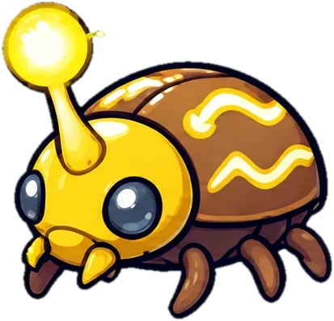

 Electric
ElectricTap a stage to read its story.
Beetiny is a compact golden-amber scarab, its oval shell etched with faint zigzag grooves and a single short antenna crackling at its tip with a tiny golden light. It charges itself by rolling through the dry leaf-litter of Bug Thicket, picking up static with every shuffle of its six legs. The charge is too small to hurt, but it makes Beetiny's shell buzz pleasantly when stroked - thicket children call it a living toy. Its eyes are large and bright, always aimed forward with cheerful determination.
Field note: Beetiny builds up enough static to briefly light a firefly lantern after a 20-second shuffle across dry leaves.
Bug Thicket. Beetiny and its family are found in the Bug Thicket. See everyone who lives there.
Share a Bond Food that matches its types to become friends. Beetiny loves:
A Bond Food is not a trick. It joins your spirit with the Kimuro's spirit, and only when it chooses you.
Print the Kimuro adventure packs: mazes, cards, a board game and Bond Mark medals.
See the printable packs